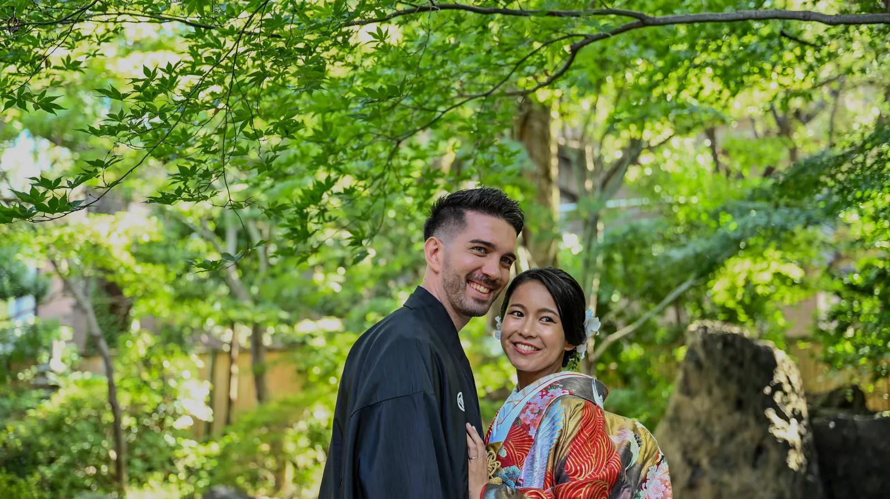
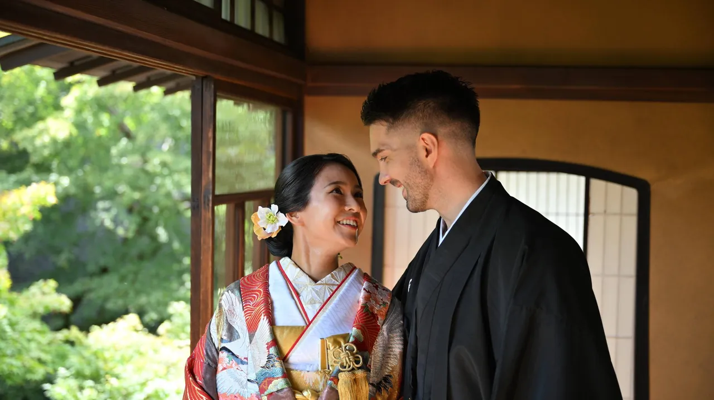
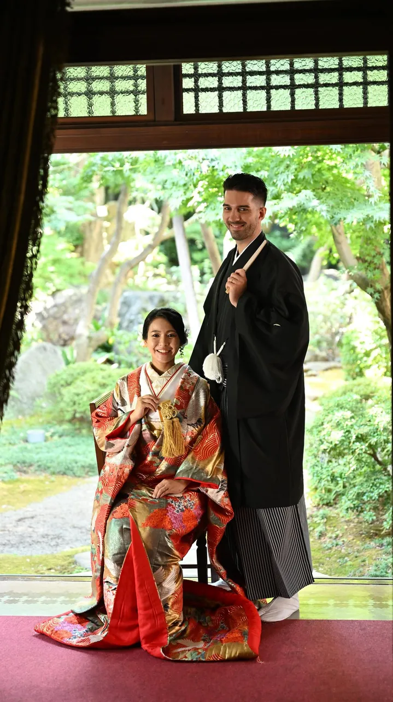
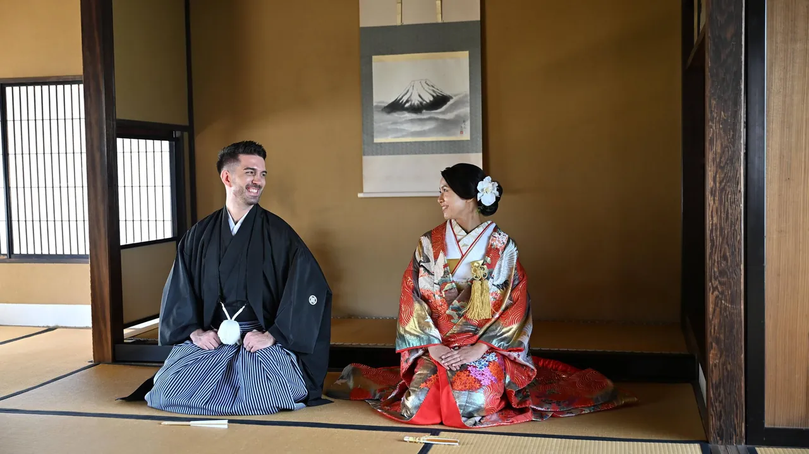
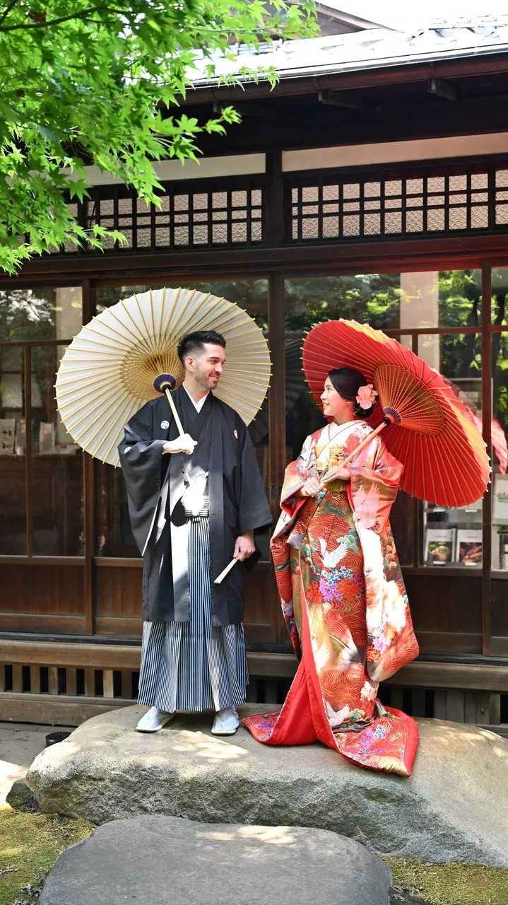
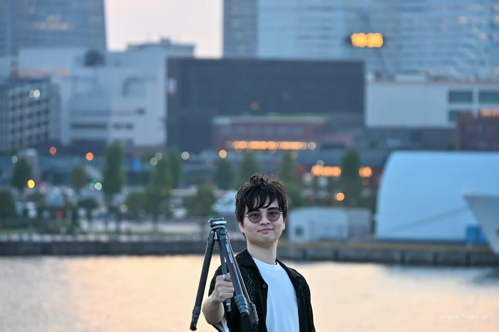

Family
Family / 120 min¥33,000tax incl.
- 120 minutes of shooting at one or two locations
- Every frame delivered with basic correction
- 50 photos I pick and fully retouch
For families, three generations together and birthdays
I'm Sho, and I shoot on location across Tokyo and Yokohama. Family days, pre-weddings, omiyamairi, okuizome and profile portraits, all in natural light. Nobody gets told to smile. Your photos arrive within 7 days of the shoot, or within 4 days if you add speed delivery.
Shot in the light that was there, with no heavy retouching. Each place has its own page.
Daylight,
and no forced smiles.
I work with the light that's already there and keep the editing light too. Pre-weddings, okuizome, family portraits, aircraft and landscapes all get the same approach. You can see the shots on the back of the camera as we go, and the finished photos reach you within 7 days. Recent work goes up on Instagram at @luma_frame.jp.






How I shoot
Each price depends on what we're shooting, and every figure includes tax. The quote is free. Nothing is booked until you've agreed to it.
For families, three generations together and birthdays
For maternity, newborn, okuizome and 100-day celebrations
I walk with you through the shrine visit and shoot it as it unfolds
Furisode and hakama, shot on location. Kimono dressing, hair and make-up aren't included
For an anniversary, or the days after a proposal
For social media, your website or a casting profile
Before or after the ceremony, in Japanese or western dress
Coverage on the wedding day itself. Because the date can't move, this plan has its own cancellation terms
Your shop, products and dishes, for the website, menu and social media
Seminars, networking evenings and in-house events
Airport and landscape photos taken on commission
Railway photos taken on commission
Add only what you need. If you don't use an option, you don't pay for it.
You don't need to choose a category first. Tell me what the photos are for, and I'll come back with a free quote.
Every shoot fits one of twelve categories. Within each one, we can change what's included to suit the day.
A birthday, the first day of school, a day out with the grandparents. Children change quickly, and this keeps your family as it is this year.
From late pregnancy to the newborn weeks, okuizome and the 100-day celebration. I can come to your home for these.
I join you for the shrine visit and shoot as it happens. I frame wide enough to fit the whole family in.
Furisode and hakama, photographed in the street or a park instead of a studio. Kimono dressing, hair and make-up aren't included.
An anniversary, or the days after a proposal. I wait until you've both stopped posing for me.
For your website, business cards and social media. A photo that looks like you on a good day.
Before or after the ceremony, in Japanese or western dress, at a shrine or in a park. We choose the backdrop together so it suits the colours you're wearing.
From getting ready, through the ceremony, to the group photos. We go over the running order on an online call before the day.
Half a day on your shop, products or dishes, for the website, menu and social media. We can begin with what you want customers to notice.
Seminars, networking evenings and in-house events. I shoot from spots where I won't interrupt the program.
I photograph aircraft at Haneda or Narita on your behalf. I also take on airport keepsake shots before a trip, and landscape work.
I photograph trains for you in natural light. You receive every frame with basic correction, plus 60 photos I pick and fully retouch.
It takes four steps, and I come to you for the shoot.
What's the occasion, where and when would you like to shoot, and how many people will be there? Let me know what the photos are for, too.
I'll suggest a few spots, give you some ideas on what to wear and sketch out the day. When you accept the quote, I'll send a payment link. Your date is confirmed once the payment clears.
There's no rush. We talk as we go, and I start shooting once everyone has relaxed. You can check the shots on the camera along the way.
I choose and finish the photos, and they reach you within 7 days of the shoot.
If your question isn't here, send it through and I'll answer it.
A rough idea is enough to start with. The portfolio is worth a look while you think it over.